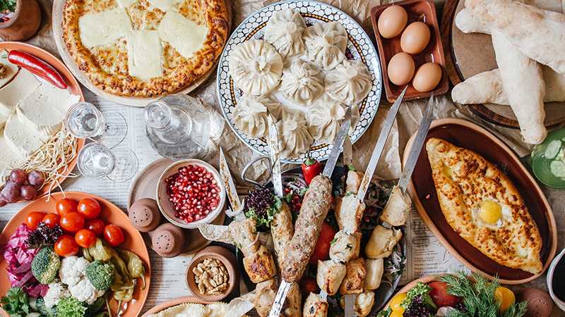

- 
-

-

The national Georgian cuisine is one of the main attractions of the country. The local dishes here are so various delicious and appetizing that no one will be able to remain indifferent. Just one warning: if you are on a diet or prefer vegetarian low-calorie food we wish you the courage to overcome all the temptations that you will face in Georgia.
Lets take a brief look on some of the most common you will seen on Georgian feast.
In the sections below we will be covering absolute most famous and absolute champions of the country's old and traditional dishes, such as: